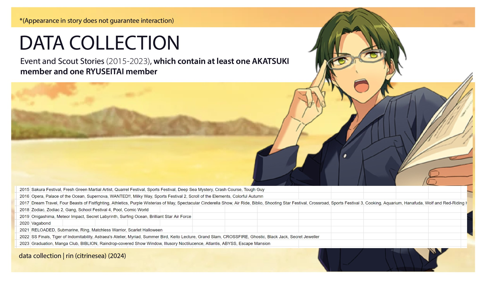
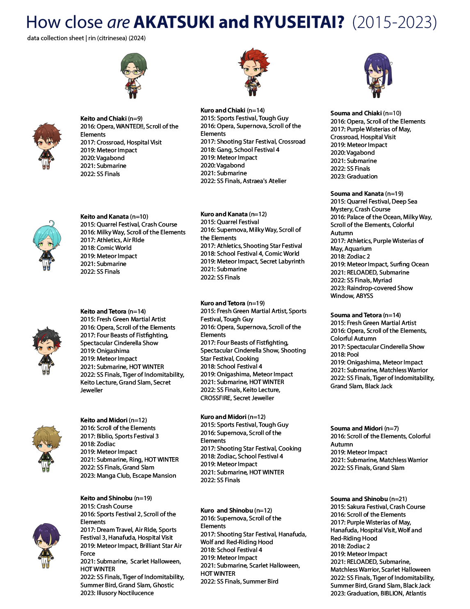

AKARYUSEI Interaction Analysis and Survey
AKATSUKI and RYUSEITAI have history
Can we get precise about it? The answer may surprise you. This content analysis asks Q1) How many stories does an AKATSUKI member appear with a RYUSEITAI member? Q2) Who is most connected with the other group via story appearance? Q3) Which AKARYUSEI pair shows up together the most?
Additionally, 84 AKARYUSEI producers took a survey where I asked the same questions. Together, our hypotheses were tested against the actual numbers.

I collected all event and scout stories from 2015-2023, which featured at least one AKATSUKI member and at least one RYUSEITAI member. Story appearances do not guarantee interactions.
☆ APPENDIX
